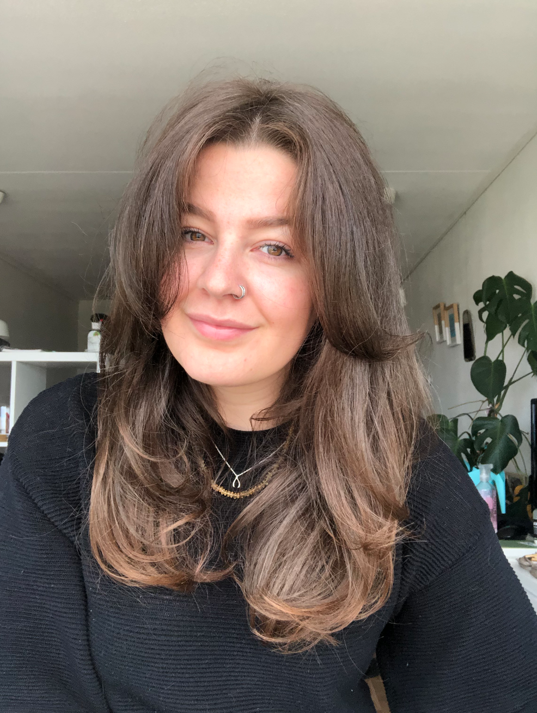

Hi, welkom op mijn HCI portfolio! Mijn naam is Rosa van den Heuvel, ik ben 27 jaar oud en studeer Communication and Multimedia Design. Op dit moment volg ik het vak HCI, waar ik meer verwacht te leren over nieuwe programma's, technologieën en het implementeren hiervan. Wie weet opent het nieuwe deuren in mijn interesses en werkgebied. Het lijkt mij interessant om te leren over het implementeren van deze technologieën in de kunstwereld. Ik hoop dat ik aan het einde van dit vak meer heb geleerd over de besproken topics en tijdens de labweken iets kan maken waarvan ik het in eerste instantie nooit had verwacht dat ik het zou kunnen maken. Ook hoop ik nieuwe mensen te leren kennen en van hen te leren gedurende de labweken. Binnen deze portfoliowebsite zal al het gemaakte materiaal voor dit vak te vinden zijn. Enjoy!
